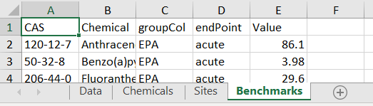
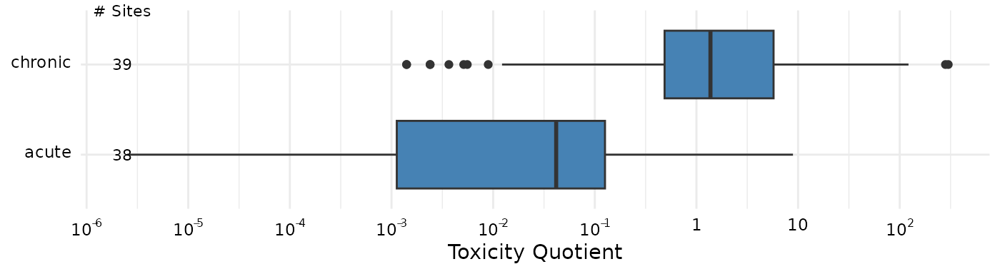
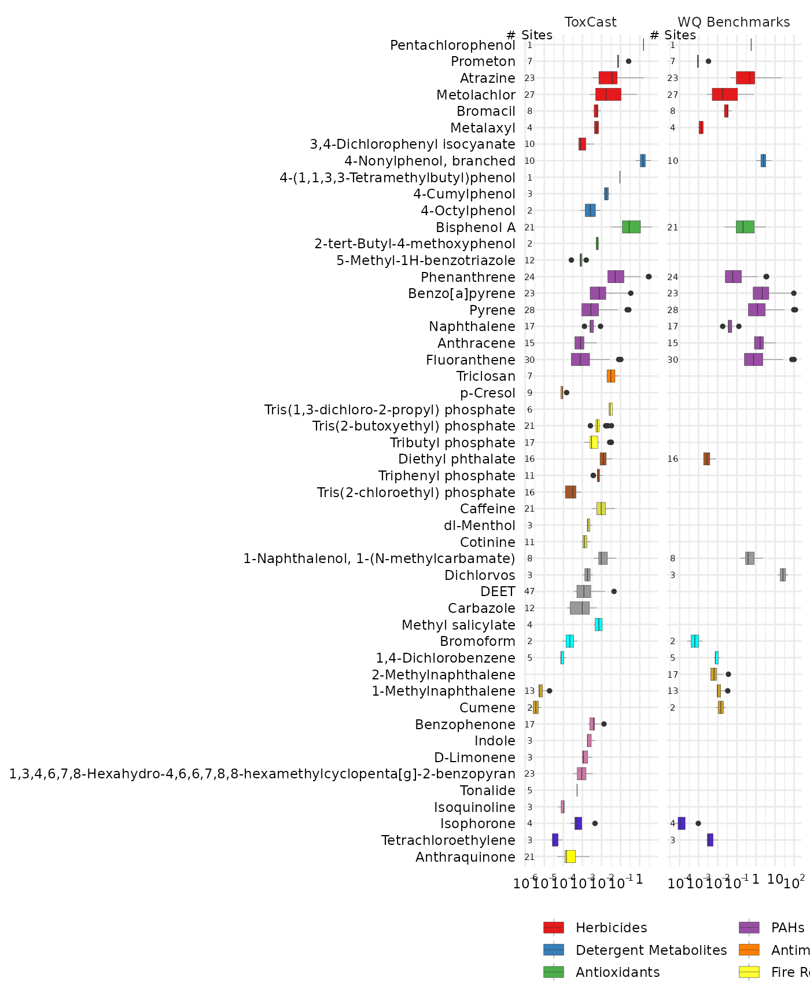
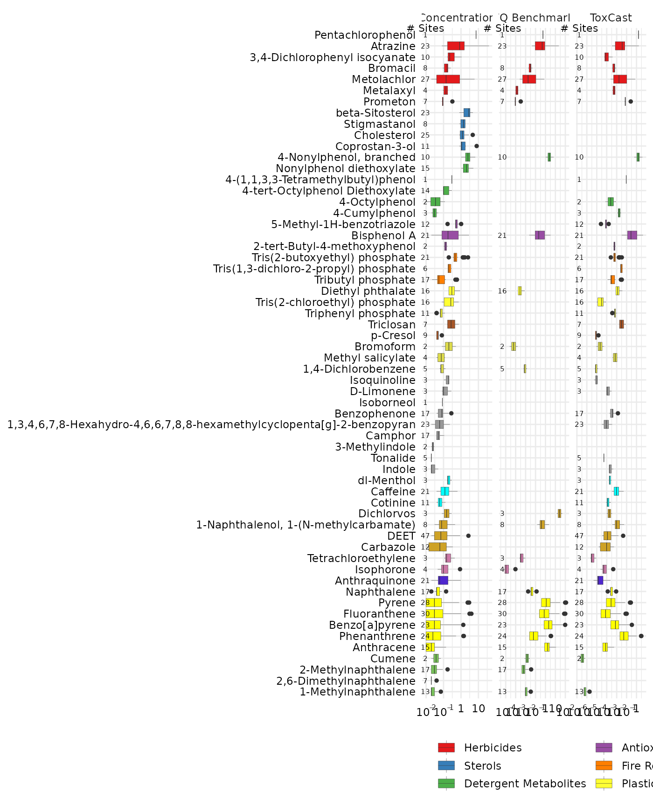

Introduction
The majority of the examples in this documentation create EAR values from concentration “benchmarks” set by the ToxCast database. Here we describe a way to provide your own custom benchmarks data.
Preparing Benchmarks
Input data for a custom toxEval input file should be prepared in a Microsoft ™ Excel file using specifically named sheets (also known as tabs). There are 4 mandatory sheets (Data, Chemical, Sites, Benchmarks). The sheets should appear as follows (although the order is not important):

Mandatory Information
The mandatory columns are: CAS, Value, groupCol, Chemical. Additional column can be included, but will be ignored by toxEval functions.
CAS: A character column defining the chemicals via their Chemical Abstracts Service (CAS) registry.
Chemical: A character column defining the name of the chemicals. This is necessary for labels because the only information
toxEvaluses by default for chemical names are the names assigned by the ToxCast database for an associated CAS.endPoint: A character column naming the benchmark. This is analogous to the assay names in the ToxCast analysis.
Value: The concentration (in identical units as what is reported in the “Data” sheet) of the benchmark.
groupCol: A character column that groups endpoints. This is analogous to the Biological groupings from the ToxCast analysis.
Explore Benchmarks
In this section, we will assume there is a toxEval input file named “OWC_custom_bench.xlsx”, as descibed in Preparing Benchmarks. The next section Create Example File will walk through creating the “OWC_custom_bench.xlsx” file on the example data provided within the toxEval package.
Toxicity Quotient
This example uses water quality guidelines/benchmarks from EPA and other sources. The guidelines are classified into chronic and acute categories.
tox_list_bench <- create_toxEval("OWC_custom_bench.xlsx")
Using a “Benchmark” tab in the input file, you can skip the ACC and filtered_ep arguments:
summary_bench <- get_chemical_summary(tox_list_bench)
For ToxCast EARs, it makes sense in the boxplot visualization to sum the EARs of all endpoints for a single chemical. This is due to the specific nature of the ToxCast endpoint suite of tests.
Some benchmarks such as these water quality guidelines already take into account the overall effects, and you do not want to sum those values. There is an argument in the plot_tox_boxplots function that allows you to specify: sum_logic (where TRUE sums the EARs for each chemical, and FALSE does not).
plot_tox_boxplots(summary_bench, category = "Chemical", sum_logic = FALSE, x_label = "Toxicity Quotient")

plot_tox_stacks(summary_bench, chem_site = tox_list_bench$chem_site, category = "Chemical", sum_logic = FALSE, y_label = "Toxicity Quotient", include_legend = FALSE)

The category argument can be set to “Biological”, and which then shows the distributions of the acute and chronic groupings.
plot_tox_endpoints(summary_bench, category = "Biological", x_label = "Toxicity Quotient")

Compare with ToxCast
Let’s get the ToxCast example chemical summary as described in the Basic Workflow:
path_to_file <- file.path(system.file("extdata", package="toxEval"), "OWC_data_fromSup.xlsx") tox_list <- create_toxEval(path_to_file) ACC <- get_ACC(tox_list$chem_info$CAS) ACC <- remove_flags(ACC = ACC) cleaned_ep <- clean_endPoint_info(end_point_info) filtered_ep <- filter_groups(cleaned_ep) summary_tox <- get_chemical_summary(tox_list, ACC, filtered_ep)
We can use the side_by_side_data function to create a single data frame that the toxEval plotting functions can use.
gd_tox <- graph_chem_data(summary_tox) gd_bench <- graph_chem_data(summary_bench, sum_logic = FALSE) combo <- side_by_side_data(gd_tox, gd_bench, left_title = "ToxCast", right_title = "WQ Benchmarks")
The “combo” data frame has a new column “guide_side”, and is a factor containing the “left_title” and “right_title”. This will allow us to facet the output of the chemical boxplots. The ordering of the chemicals is primarily based on the “left” input (so in this case, the ToxCast EARs).
The output of all the toxEval graphs are ggplot2 objects. What this means is you can continue to customize the object using ggplot2 functions. In this case, we can use facet_grid to separage the data by the column “guide_side”. The name of the facet column must be include without quotes, as shown here:
plot_chemical_boxplots(combo, guide_side, x_label = "") + ggplot2::facet_grid(. ~ guide_side, scales = "free_x")

Compare with Concentration
We can create a summary data frame that has concentrations instead of EARs as well. We’ve included a function get_concentration_summary to make the chemical_summary data frame input directly from the tox_list.
summary_conc <- get_concentration_summary(tox_list) gd_conc <- graph_chem_data(summary_conc) combo2 <- side_by_side_data(gd_conc, gd_bench, left_title = "Concentration", right_title = "WQ Benchmarks") plot_chemical_boxplots(combo2, guide_side, x_label = "") + ggplot2::facet_grid(. ~ guide_side, scales = "free_x")

Concentrations, benchmarks, and ToxCast
combo_all_3 <- combo2 %>% bind_rows(combo %>% filter(guide_side == "ToxCast") ) combo_all_3$Class <- factor(combo_all_3$Class, levels = levels(combo2$Class)) combo_all_3$chnm <- factor(combo_all_3$chnm, levels = levels(combo2$chnm)) combo_all_3$guide_side <- factor(combo_all_3$guide_side, levels = c("Concentration", "WQ Benchmarks", "ToxCast")) plot_chemical_boxplots(combo_all_3, guide_side, x_label = "") + ggplot2::facet_grid(. ~ guide_side, scales = "free_x")

Create Example File
This section describes how to use the “benchmarks” option to create a custom analysis.
The example data provided in toxEval is taken from the supplemental information in Baldwin, et al 2016. The third supplemental table provides water quality guideline benchmarks. We’ll provide that table here in a more user-friendly format, with associated CAS values.
Create custom benchmark file
You can make your own benchmark Microsoft ™ Excel file for the example data provided in the package. The benchmark data come from tab 3 of the supplemental table file in Baldwin, et al 2016. It has been cleaned up to simple text to be copy/pasted into a csv file (the information between the single quotes), or run as R code as follows:
raw_benchmarks <- read.csv(text=[2746 chars quoted with '''],chm_nm,source,value 120-12-7,Anthracene,EPA_acute,86.1 50-32-8,Benzo(a)pyrene,EPA_acute,3.98 206-44-0,Fluoranthene,EPA_acute,29.6 91-20-3,Naphthalene,EPA_acute,803 85-01-8,Phenanthrene,EPA_acute,79.7 129-00-0,Pyrene,EPA_acute,42 98-82-8,Cumene,EPA_acute,2140 1912-24-9,Atrazine,EPA_acute,360 57837-19-1,Metalaxyl,EPA_acute,14000 87-86-5,Pentachlorophenol,EPA_acute,19 1610-18-0,Prometon,EPA_acute,98 63-25-2,Carbaryl,EPA_acute,0.85 2921-88-2,Chlorpyrifos,EPA_acute,0.05 333-41-5,Diazinon,EPA_acute,0.17 62-73-7,Dichlorvos,EPA_acute,0.035 84852-15-3,"4-Nonylphenol, branched",EPA_acute,28 120-12-7,Anthracene,EPA_chronic,20.7 50-32-8,Benzo(a)pyrene,EPA_chronic,0.014 206-44-0,Fluoranthene,EPA_chronic,7.11 91-20-3,Naphthalene,EPA_chronic,24 85-01-8,Phenanthrene,EPA_chronic,6.3 129-00-0,Pyrene,EPA_chronic,10.1 84-66-2,Diethyl phthalate,EPA_chronic,220 90-12-0,1-Methylnaphthalene,EPA_chronic,2.1 91-57-6,2-Methylnaphthalene,EPA_chronic,4.7 98-82-8,Cumene,EPA_chronic,2.6 1912-24-9,Atrazine,EPA_chronic,60 57837-19-1,Metalaxyl,EPA_chronic,100 87-86-5,Pentachlorophenol,EPA_chronic,13 63-25-2,Carbaryl,EPA_chronic,0.5 2921-88-2,Chlorpyrifos,EPA_chronic,0.04 333-41-5,Diazinon,EPA_chronic,0.043 62-73-7,Dichlorvos,EPA_chronic,0.0058 84852-15-3,"4-Nonylphenol, branched",EPA_chronic,6.6 106-46-7,"1,4-Dichlorobenzene",EPA_chronic,15 75-25-2,Bromoform,EPA_chronic,320 80-05-7,Bisphenol A,other_acute,1518 120-12-7,Anthracene,other_acute,13 50-32-8,Benzo(a)pyrene,other_acute,0.24 206-44-0,Fluoranthene,other_acute,3980 91-20-3,Naphthalene,other_acute,190 85-01-8,Phenanthrene,other_acute,30 84-66-2,Diethyl phthalate,other_acute,1800 90-12-0,1-Methylnaphthalene,other_acute,37 78-59-1,Isophorone,other_acute,117000 127-18-4,Tetrachloroethene (PERC),other_acute,830 63-25-2,Carbaryl,other_acute,3.3 2921-88-2,Chlorpyrifos,other_acute,0.02 106-46-7,"1,4-Dichlorobenzene",other_acute,180 75-25-2,Bromoform,other_acute,2300 80-05-7,Bisphenol A,other_chronic,0.86 120-12-7,Anthracene,other_chronic,0.012 50-32-8,Benzo(a)pyrene,other_chronic,0.015 206-44-0,Fluoranthene,other_chronic,0.04 91-20-3,Naphthalene,other_chronic,1.1 85-01-8,Phenanthrene,other_chronic,0.4 129-00-0,Pyrene,other_chronic,0.025 84-66-2,Diethyl phthalate,other_chronic,110 90-12-0,1-Methylnaphthalene,other_chronic,2.1 91-57-6,2-Methylnaphthalene,other_chronic,330 78-59-1,Isophorone,other_chronic,920 127-18-4,Tetrachloroethene (PERC),other_chronic,45 1912-24-9,Atrazine,other_chronic,1.8 314-40-9,Bromacil,other_chronic,5 51218-45-2,Metolachlor,other_chronic,7.8 63-25-2,Carbaryl,other_chronic,0.2 2921-88-2,Chlorpyrifos,other_chronic,0.002 84852-15-3,"4-Nonylphenol, branched",other_chronic,1 106-46-7,"1,4-Dichlorobenzene",other_chronic,9.4 75-25-2,Bromoform,other_chronic,320', stringsAsFactors = FALSE)
Looking at the “source” column, there are 4 distinct values: EPA_acute, EPA_chronic, other_acute, other_chronic. We have a few choices, we can keep each of those as an “endPoint”, or make the choices only acute/chronic, or even have the endPoints be EPA/other with acute/chronic groupings. In this example, we’ll show how to use this data to make a water quality benchmark analysis just based on the acute/chronic distinction. The “value” in the data above is already in \(\mu\)g/L, which matches up with our data. If the units were not aligned, the workflow would need to include converting the benchmark units to match whatever the data is reported in.
Essentially, the work that must be done is to rename some columns, and figure out how to classify the benchmarks. The following code uses the dplyr and tidyr packages for this:
library(tidyr) bench <- raw_benchmarks %>% rename(Value = value) %>% separate(source, c("groupCol", "endPoint"), sep = "_") %>% left_join(select(tox_chemicals, CAS = Substance_CASRN, Chemical = Substance_Name), by = "CAS") bench$Chemical[is.na(bench$Chemical)] <- bench$chm_nm[is.na(bench$Chemical)] head(bench)
## CAS chm_nm groupCol endPoint Value Chemical
## 1 120-12-7 Anthracene EPA acute 86.10 Anthracene
## 2 50-32-8 Benzo(a)pyrene EPA acute 3.98 Benzo(a)pyrene
## 3 206-44-0 Fluoranthene EPA acute 29.60 Fluoranthene
## 4 91-20-3 Naphthalene EPA acute 803.00 Naphthalene
## 5 85-01-8 Phenanthrene EPA acute 79.70 Phenanthrene
## 6 129-00-0 Pyrene EPA acute 42.00 PyreneNow we need to get that information into a “tox_list”. Here is how to create the Microsoft ™ Excel file using the openxlsx package:
path_to_file <- file.path(system.file("extdata", package="toxEval"), "OWC_data_fromSup.xlsx") tox_list <- create_toxEval(path_to_file) tox_list_wq_bench <- list(Data = tox_list$chem_data, Chemicals = tox_list$chem_info, Sites = tox_list$chem_site, Benchmarks = bench) library(openxlsx) write.xlsx(tox_list_wq_bench, file = "OWC_custom_bench.xlsx")
Now, we can use this new benchmark tox_list to generate our custom benchmark figures and tables.
tox_list_bench <- create_toxEval("OWC_custom_bench.xlsx")
Exporting ToxCast Benchmarks
It is also possible to export the equivalent “Benchmark” data from the ToxCast analysis. Within the Shiny app, there is a button labeled “Download Benchmarks”. If you are navigating the app and find a set of conditions that make sense for your analysis, it is probably a good idea to create a record of the ToxCast ACC values.
Let’s use the data provided in the package to show an example of how to do this directly in R:
library(dplyr) library(toxEval) path_to_file <- file.path(system.file("extdata", package="toxEval"), "OWC_data_fromSup.xlsx") tox_list <- create_toxEval(path_to_file) ACC <- get_ACC(tox_list$chem_info$CAS) ACC <- remove_flags(ACC = ACC) cleaned_ep <- clean_endPoint_info(end_point_info) filtered_ep <- filter_groups(cleaned_ep) benchmarks <- ACC %>% filter(endPoint %in% filtered_ep$endPoint) %>% rename(Value = ACC_value, Chemical = chnm) %>% left_join(filtered_ep, by = "endPoint") names(benchmarks)
## [1] "CAS" "flags" "endPoint" "ACC" "MlWt"
## [6] "Value" "Chemical" "groupCol" "assaysFull"The “benchmarks” data frame includes all the information you would need to reproduce the toxEval analysis in the future. This can be important if the ToxCast database is updated, yet you want to reproduce your original results.